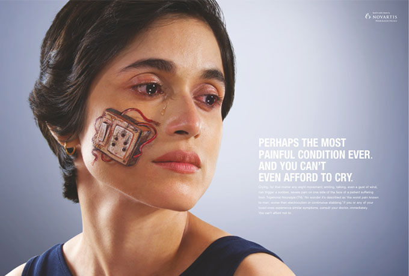
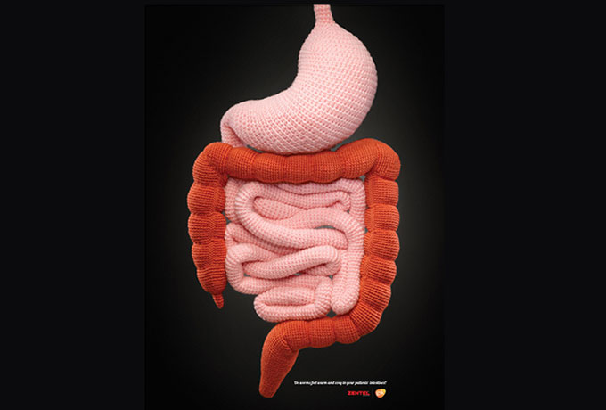
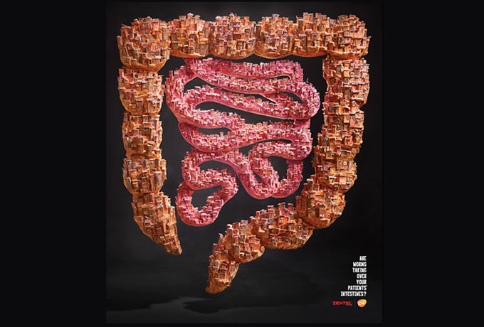

Work
When you integrate science, strategy and creativity, it calls for the best possible teams working on each aspect – a USP we are proud of.
So whether the work involves one or all three aspects, the right insights and passion ensures that the work shines through, every time. See our work
Medulla Communications Pvt. Ltd. Address - Unit No. 602, Opulence Bldg, 6th Road, TPS III, Santacruz(E), Mumbai - 400055.
For breakthrough healthcare communication solutions, connect with us on info@medulla.in

Tear Drop
One of the most painful nuerological condition makes even a feather touch feel like an electric shock. So painful,
a patient would hesitate to even cry as even tears can trigger an attack. The tear drop brought alive the real gravity of the situation in this visual dramatization, like no other.

Woolen Intestines
Worms get warm and cosy in the intestine making it their home in lavish comfort. To bring this aspect to light, a woolen intestine was hand crafted to highlight the need for deworming.

Intestinal slums
The ubiquitous Indian slums were chosen to show how worms multiply in the stomach and stay on for ever unless they are dewormed. A life size slum inside the intestines was created using waste materials from slums to bring alive the concept and how.
Fake patient project
Considering the number of diabetics in India, it's virtually impossible for a doctor to cater to all his patients' needs and queries. To promote a self- help, educative book "Living with Diabetes in India", we got fake patients to repeatedly SMS doctors with queries on their health. On being granted an appointment, the fake patients revealed the need for the book on diabetes management.
Spinning Living room
Vertigo patients describe an attack as the whole room spinning about. We followed this insight to the tee in a stunning visual replica.
Last Words
Palliative care or end-of-life care is an unheard of aspect in treatment as it means accepting the fact that a patient is about to die. To change the perspective of saving life at any cost and discomfort to the patients, the simple insight of "Last words are heard by nurses, not families" was converted into a powerful film that highlighted the need for palliative care.